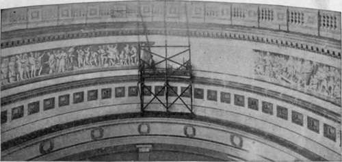

The Frieze
Description
This section is from the book "The National Capitol. Its Architecture Art And History", by George C. Hazelton, Jr. Also available from Amazon: The National Capitol Its Architecture Art and History.
The Frieze
About 75 feet from the floor, the walls of the rotunda are belted by a frieze, which, at the first glance, gives the impression of alto-rilievo. It is, however, a fresco, the work of two foreign-born artists, Brumidi and Costaggini, and represents scenes in the history of the New World from the time of its discovery.
Following the landing of Columbus in 1492, are : the entry of Cortez into the Halls of the Montezumas in 1521 ; Pizarro's conquest of Peru in 1533; the midnight burial of De Soto in the Mississippi in 1541 ; Pocahontas saving the life of Captain John Smith in 1606; the landing of the Pilgrims at Plymouth, Massachusetts, in 1620; and Penn's treaty of peace with the Indians in 1682.
Brumidi was taken ill in 1880, shortly after finishing the figure of William Penn, and died February 4th, quite advanced in years, presumably from the effect of the shock produced by a partial fall from the scaffolding upon which he worked. The watchman just below the canopy, who was accustomed to follow with his eyes the progress of the artist, saw him fall, and running down the long flights of steps, succeeded in rescuing the old gentleman as he clung nearly exhausted to the ladder, or he would have fallen and been dashed to pieces on the floor beneath. The chair upon which he sat in order to paint had been pushed backward on the small platform, and as his assistant was absent, there was no one on the scaffolding to rescue him.
Upon Brumidi's death, Filippo Costaggini was engaged to complete the frieze. The late artist's designs were promptly appropriated without remuneration to his family for the thought and labor which they contained. The first figure which Costaggini painted is easily distinguished as the one to the right of William Penn. The first entire group executed by the newly engaged artist represents a scene in Plymouth Colony, in December, 1620, thus described by Governor Bradford in the " Log" of the Mayflower: " And afterwards took better view of the place, and resolved where to pitch their dwelling; and the 25 th day began to erect the first house, for common use, to receive them and their goods".
Following this in order are : the treaty of peace between Governor Oglethorpe of Georgia and the Indians in 1732; the battle of Lexington in 1775 ; the reading of the Declaration of Independence in 1776, which, as John Adams writes on July 9th, " was yesterday published and proclaimed from that awful stage in the State-house yard; by whom do you think ? By the Committee of Safety, the Committee of Inspection, and a great crowd of people" ; the surrender of Lord Cornwallis at Yorktown in 1781 ; the death of Tecumseh, who is said to have been killed by Colonel Richard Johnson, at the battle of the Thames in 1813, the only Vice-President elected by the Senate instead of by the electoral college; General Scott's entry into the city of Mexico in 1847 ; and the discovery of gold in California in 1848.
Since May, 1889, work upon the frieze has been suspended, principally because no subjects have been determined upon for the final groups. All of Brumidi's designs have been executed. It was his intention to have but one more picture in the belt. Costaggini, however, in placing the designs of his predecessor in the frieze, has crowded them to make room for two sketches— by himself. He proposes the junction in May, 1869, of the Union and Central Pacific Railroads at Promontory Point. Utah, with Leland Stanford driving the golden spike which bound the iron girders connecting the Atlantic and Pacific Oceans; and the opening of the World's Fair, with President Cleveland touching the button which set its wheels in motion.
Whether it is that Congress has had too much annoyance over the Pacific roads to place a constant reminder upon the walls of the rotunda, we know not; but when on June 1, 1896, Mr. Hansbrough reported to the Senate a joint resolution, without amendment, " For completing the painting of the frieze in the Rotunda of the United States Capitol by Filippo Costaggini, after designs to be furnished by him and approved by the Joint Committee on the Library, six thousand dollars, or so much thereof as may be necessary," Mr. Hawley said : " I am not quite satisfied with the manner in which the frieze is being finished or conducted. I make no especial criticism upon the President of the United States for various reasons, and he might find his place upon it, but I am not quite satisfied with an attempt to approve a history of the United States, which the frieze is supposed to suggest, that omits George Washington and Abraham Lincoln, and presents Mr. Cleveland, when we consider the respective positions of Mr. Lincoln and Mr. Cleveland during the great war of the rebellion." In replying to the Connecticut Senator and in support of his report, Mr. Hansbrough said : " I have here two sketches which it is proposed to use in completing the fresco work. The one that the Senator from Connecticut objects to, or believes he objects to, represents President Cleveland pressing the electric button which notified the world that the World's Fair was open. It also represents in the background the Duke of Veragua and his family, the remnants of the Columbus family, and all there is left of it. It will be remembered that the first painting in the frieze of the Dome is a fresco representing Columbus landing in America. The last one will be a fresco representing the opening of the World's Fair, attended by the only living descendants of the Columbus family. The Committee think it a very appropriate sketch".
To this Mr. Hawley replied : " I wonder how a man giving the history of the United States could entirely skip the great war of the Union. If you ask how I would put it upon the frieze, if I did nothing else I would represent the apple tree at Appomattox and Grant and Lee shaking hands, with surrounding touches and intimations of troops and various designs. I do not object to the Senator's idea of giving a hint of the great exhibition at Chicago, but I object to the utter absence of the greatest historical event since the War of the Revolution—one of the greatest in all history." The resolution passed the Senate.
Representative Boutelle,on the 6th of the same month, introduced into the House a joint resolution which called for some suitable design which should " symbolize the great events in the national life since the close of the Mexican war, and appropriately commemorate the preservation of the Union and the establishment of universal freedom by heroic valor and sacrifice of the citizens of the Republic under the leadership of Abraham Lincoln." This is as far as the matter has gone. The Brumidi scaffolding still hangs, as it has hung for years, like a huge, ungainly spider, to the walls of the rotunda.
In order to appreciate the merits of Brumidi's figures, we have but to compare his work in the frieze-belt with that of the artist employed to complete it, bearing in mind the words placed in the mouth of Michael Angelo by the poet Longfellow:
" I have often said That I account that painting as the best Which most resembles sculpture. Here before us We have the proof. Behold these rounded limbs ! How from the canvas they detach themselves, Till they deceive the eye, and one would say, It is a statue with a screen behind it! "
The first show a delightful warmth and gradation of tone. The background is darker, and sets out the figures in bolder relief. This Brumidi intended to make harmonious throughout upon the completion of the belt. The figures of Costaggini are cold and hard, and in some instances produce the grotesque effect of having been flattened out of drawing.
The superiority of the elder artist is more noticeable in the first thr^e groups. Toward the close of his life, his physical powers were inadequate to the difficulties of painting in such a necessarily constrained position, unassisted by sufficient moving of the scaffolding. Brumidi's art, however, here as elsewhere, is not always of the best. His painting is very uneven; much cf it extremely fine, some of it execrable. No higher compliment, however, could be paid to his genius than the expression of a group of artists, who were decorating the new building for the Congressional Library, overheard when they visited the Capitol to study the frescoes of the Italian : " We have nothing equal to this in the Library. There is no one who can do such work to-day".
Continue to: